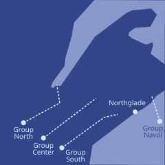
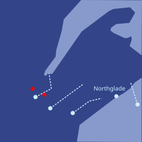
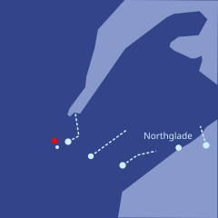
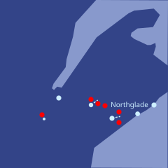

“你要不断找出能把成功概率最大化的调整。换不同参数的模拟器去试——记住，最后的攻击会出现在真实世界里，而不是模拟器里，所以我们能做到的，只是筛出在不同模拟器上都稳健的改动。跑个100万轮之后，希望我们能得到一套在现实中相当管用的东西。在我们人类看来，那大概是一堆看不懂的鬼画符。而对我们要用这套攻击去针对的 AI 来说，它就像一条魔法蛇，用致命的目光直直盯着你的脸。”
Zei and Mu were standing on top of a snowy hill. Green pine trees covered with thick white snow lined the surroundings as far as their eyes could see. A strong cold wind blew into their faces. The rest of their bodies were shielded by jackets covered in a mixture of white and grey, thick enough to allow them to enjoy the surroundings but deliberately not quite thick enough for them to feel warm. Just above the trees in the distance was the sun that had just risen in the east.
"So this is where our future will be decided", Mu said calmly.
"Do you think we're ready?", Zei asked.
"No", Mu replied. "But nothing meaningful ever happens when people are ready."
"What we hope is that the Arctics are less ready than we are."
Behind them, they could hear footsteps slowly walking up the hill, each step coming about a tick after the previous, fighting the deep snow. After a few moments, Zei felt someone hugging him from behind.
"Whatever happens today, Zei, I am happy that I got to know you."
It was Bai. Zei turned around and grabbed her hand, pulling her up the final step so that she could be at the same height as him and Mu.
"I am happy that I got to know you too."
For a few moments, the three of them waited in silence, observing the snow blowing through and over the trees to their east.
"So what's the plan?"
"Last train to Eldil is arriving today. At this point, there's no way the Arctics don't know that we have some kind of large contingent here. So I'm sure they're already starting to prepare their army to meet us. These forests are hard to navigate through, but not infinitely hard. So our best chance is to strike tonight, push into the northern part of Northshore from the west, completely bypass Northglade and then cut off and surround it."
"Are you confident in the plan?"
"In my last battle against the Arctics, I screwed up completely and Mu saved the day. So no, I'm not confident. But this is the best chance we have."
Bai hugged Zei again from the side.
"I believe in you."
Mu broke her silence. "I believe in you too, Zei."
They silently stared at the thick snowy forest of pine trees for another five minutes, and then started to slowly walk back down toward their makeshift bunker.
Den, Mu, Zei and several dozen other Veridian generals and Kungaupei leaders were sitting inside of a cramped room, where Lektor was standing at the front presenting.
"Alright, does everyone know their tasks?", Lektor asked loudly. "Gallowar?"
"I'm leading Group North, our task is to cross the forest, move far northeast until we get to the coast, and set up a perimeter cutting the Arctics off from the whole peninsula. This will require fighting and surrounding the Arctic force in Northshore on my southern flank, as well as warding off any reinforcements on my northern flank."
"Good! You, Telpo?"
"I'm leading Group Center, our task is to cross the forest directly east. We are expecting to be fighting the primary Arctic drone group. No offensive positional objective, our job is to keep them occupied and make sure they don't break through."
"And you, Den?"
"I'm leading Group South, our task is to cross the forest, move toward the southeast, and then set up a perimeter on the outskirts of Northglade."
"Vakaria?"
"I'm leading Group Naval, our main task is to attack Northshore east of Northglade from the south with seaborne drones. Distract and surround to the best of my ability. Stretch goal is to also attack the Arctic core territory further east on Thaldur Island."
After Vakaria finished answering, there was a moment of silence. Finally, Lektor spoke again.
"Zei?"
"Supervise all fronts, identify any necessary changes to strategy and tactics in the drone combat."
Lektor turned back to look at the screen again.

Everything that the group leaders had said seemed to match the plan that was on the map.
"Alright, very good. Sounds like we all know what we need to do. Everyone, dismissed. You all have three longhours to make your final preparations. We launch at sundown."
Zei, Bai and Mu were standing once again at the top of the hill. The sun was by this point just barely above the horizon behind them, minutes away from setting. The pine trees were snowy as before. But the landscape had radically changed. There were thousands of snowmobile-like contraptions sitting at the edge of the forest. Many were visibly equipped with weapons. Zei could make out a large number of thin silver lines glimmering in the sunlight, starting from the rear of many of the largest snow drones and stretching back as far as he could see. Fiber optic cables, he realized. They would stretch for hundreds of kilometers tonight - and they are what would allow Zei to reliably stay in contact with the drones as the front advanced.
"Wait, is that a box of printers on top of one of the drones?", Bai suddenly asked.
"Yep. There's also other drones that are carrying stick-on paper and shirts. A lot of classroom equipment. Just in case we need to rapidly apply visual attacks on the Arctic drones' algorithms."
"I see..."
Zei's watch buzzed. He turned around, and saw that the bottom of the sun had already begun receding below the horizon. "Fi le gei fa", he thought - one hundred ticks until it begins. He reminisced about all of the Minpentai games, from practice to championship, that he had played over the past decade. Without realizing it, all that time he had been training for the one game that really mattered: tonight.
"Time to get back to our command post", Mu said softly.
Zei turned around. The sun was already halfway below the horizon.
"Indeed, we should."
The three of them walked back slowly to their bunker at the bottom of the hill. They opened the door, walked in, took off their snowshoes and closed the door.
As soon as they were inside, a robot slid up to them, bringing tea.
"Thank you", Mu gently whispered, patting the robot on its head and taking her tea. The robot beeped softly.
Zei and Bai also picked up their teas.
Zei's watch buzzed.
He heard noises of snow drones accelerating outside.
The mission had begun.
3725 Snowmoon 30
Zei and Mu were sitting on their chairs in adjacent but separate rooms. They could each see the same command screen. On the top left, the clock was showing the time. It had just struck midnight.
All three land army groups were advancing forward quickly. The launch of the Naval group was delayed, so that its assault would come shortly after the beginning of the main battle. So far, the three main army groups had easily defeated a few small Arctic sentry units, and were continuing to proceed at full speed.
An alarm blared.
Zei immediately saw the cause on the map.

Zei could hear Gallowar and Telpo coordinating in the chat.
"Adopting defensive positions, spreading out to prevent encirclement", Gallowar shouted.
"Sending part of Group Center northward to attack from behind", Telpo replied.
Zei zoomed in. The Veridian and Arctic drone army groups were quickly closing in on each other. They were firing a few long-range weapons, and ten drones from Group North had already been disabled - on top of the few dozen that had already been lost to stationary Arctic traps scattered throughout the forest - but so far the main hostilities had not yet begun.
Over the past month and a half, he had played simulations of forest snow drone combat hundreds of times, and he knew what the best strategies were for detection, hiding, attacking and taking cover. The strategies had already been loaded into the drones' AI models.
A visual image appeared onscreen. It was the exact design of the Arctic snow drone. It was slightly different from the images he had seen before - faster and more agile, better protected against stationary traps, and with better defenses on the sides and back. The Arctics had been anticipating another rapid offensive campaign, he realized. These improvements came at the expense of effectiveness in traditional fixed face-to-face combat. The Veridian snow drone fleet had made some similar modifications, but to a significantly lesser extent. Hence the battle style that was most to their advantage seemed to be ... direct face-to-face combat with fixed battle lines.
Not good, Zei thought - the Arctic drone fleet was larger. They would have to make up for it with better micro-tactics.
A few minutes later, the drone fleets came close enough to clash. The Veridian drone fleet pre-emptively cut down a large number of trees to prevent encirclement, particularly on its north flank. Gallowar's strategy was simple: delay in the north, fight in the east. In about twenty minutes, Telpo's fleet would attack the eastern Arctic group from the south, and hopefully surround and defeat it.
Zei watched carefully. Drone casualty counts were starting to increase rapidly on both sides. Soon, both the Veridian and Arctic losses spiked above a hundred.
Zei continued scrolling through all of the visual feeds. He saw some large boxes on top of Gallowar's largest snow drones open up. A large fleet of Helisport copters and delivery copters, seemingly modified to carry more dangerous payloads, flew out. Ah right - the Arctic snow drones were also vulnerable from the top. Good job converting civilian infrastructure, Zei thought.
Embedded in each of the army groups, sitting in the command centers safely far behind the front, were a large number of Dzego's best Minpentai players, which had been quietly flown in by the Kungaupei, as well as some of Veridia's best Helisport players - the two groups with the best hands-on experience understanding airborne duels.
Zei continued watching. For the moment, Gallowar's strategy seemed to be going well. His army group was successfully slowly retreating on the northern flank while cutting down trees and leaving traps, and the battle on the eastern flank was progressing smoothly. Exact casualty ratios were difficult to determine, but from the numbers that appeared onscreen, it was significantly in the Veridians' favor.
Forty minutes later, he saw the good news that mattered: Gallowar's forces had broken through between the Arctic north and east flanks, and Telpo's fleet had begun engaging the Arctic east flank from the south.
Soon, Arctic snow drones in the east began to get rapidly disabled, while Gallowar's western flank continued its slow retreat to slow the Arctic northern flank down. The Arctic drones attempted to replicate the slow retreat strategy, but without success: by that point, Telpo had succeeded at almost completely surrounding them, and they had nowhere to go.
A few minutes later, Gallowar declared the Arctic drone fleet sufficiently defeated. He ordered his eastern flank to go around them to avoid any risk that partially disabled remnants or their traps would cause damage, and then continue northeastward full speed ahead.
Zei zoomed out, and looked at the big-picture view again.

Another one and a half longhours passed, and all four Veridian drone fleets continued advancing - except for the small offshoot that Gallowar had left behind to delay the contingent of Arctic drones to its north.
An alarm blared again. This time, it was Group Center and Group South that were both under threat.

"Alright everyone", Lektor shouted. "This is the real deal."
"Defensive positions, slow retreat in the center and attempt flanking on the sides. Be careful, minimize our losses and maximize theirs. Do not let them break our positions."
A few moments later, he added:
"For Veridia!"
"Dze go ba fau gie", Den shouted immediately after.
Zei directed the drones to begin using all their tactics, including the ones that he had learned from the clandestine battles in Redshire months earlier. They would only work for a short time before the Arctics adapted, he knew, but it was now or never.
Both sides' drone fleets spread out and created defensive lines. On the fully zoomed-out map, Zei could see the lines slowly come closer. A few minutes later, the clash began. Losses quickly pushed into the hundreds on both sides.
Gallowar's northern group suddenly switched from retreat to advance and began using the same tactics.
Zei watched carefully, holding his breath. He scrolled through small-scale tactical maps and real-time visual feeds.
Something was wrong, he realized.
"Emerald, analyze all micro-tactical and visual fields, determine which tactics are effective."
"Analyzing..."
About twenty ticks later, Emerald responded.
"Tactics one and five working with medium effectiveness. Tactics two, three, four, six have zero or slightly negative effect, Arctics appear fully adapted."
Zei groaned. Despite his best efforts, he knew, the Arctics must have successfully recovered at least some of the visual feeds from the drones in Redshire that he and the Freetown defense companies had trained on.
"All units, cease using tactics two, three, four and six. Use tactics one and five. Units with IDs ending in 0 or 5, explore random modifications."
For a few minutes, the casualty ratios moved in favor of the Veridian armies again. Then, slowly but surely, the Arctics again started to gain the upper hand.
"Emerald, which modifications are successful?", he asked.
"Eight were attempted. Only number seven was successful, and has already been introduced as the mainline version of tactic five. Recommend retiring tactic one."
"Do it."
Zei began to sweat with consternation. He had not anticipated the Arctics being able to resist their tactics so effectively.
Come on, Zei thought. Think of something.
The seaborne drones appeared to have been successful, at least in the early stages of their assault. They had landed ground craft, both east of Northglade and in Arctic core territory in Telten hundreds of kilometers further east. The seaborne drones had already begun returning to base, to receive their second round of payloads.
For a moment, Zei was pleased. But it was still far from enough.
A robot entered the room, and quietly slid up to Zei with an energy drink. Zei picked it up, gulped about half of it, and set the rest down on the table. Within moments, it took effect - but the only effect seemed to be to make Zei despair even harder.
And a moment later, a message appeared onscreen that drained away all of the remaining light in Zei's eyes.
Rear base #3 appears to have been completely destroyed by highly accurate hits from Arctic missiles.
Most likely cause: internal traitors revealed the location of the base.
Current expectation is that almost all personnel in the base did not survive. Probability that Den, commander of Group South, survived is estimated at under 10%.
Zei began to cry.
For the next few minutes, he half-heartedly whispered into his microphone, proposing minor adjustments to drone tactics, trying to optimize positional advantage and casualty ratios. Mu had immediately taken over as the commander of Group South. But in his heart, he knew that the battle was lost.
And at that moment, Zei's watch buzzed.
This was not a standard military communication channel. And this was something that Emerald deemed important enough to override his strict "do not disturb" instruction.
Zei whispered into his neck band to connect the watch to the display in his glasses. A message appeared onscreen.
This is Deluin.
Over these past months, I have been executing on my plan. I have earned the Arctics' trust; with the combination of my successful Minpentai background and my parents' status, this proved to be easy. As a result, I am now one of the commanders on the Arctic side.
We are being heavily surveilled, and there are great limits to what I can do to the Arctic drone fleet without blowing my cover. However, I have managed to set up an exploitable weakness for you.
This file contains descriptions of tactics that should be effective specifically against the southern flank, which I control. If you apply them, you should be able to break through about twenty kilometers north of the shore, and then proceed north and south to expand the rupture into a complete victory on the southern front.
From there, it will be up to you to surround the remaining forces from the south, and recover Northglade.
Almost immediately, a burst of energy returned to Zei's mind. He would have to mourn the loss of Den another day.
"Emerald, confirm the authenticity of this message."
"Message was signed by the same key that was embedded in Deluin's original message that you received on Grapetime 15."
"Analyze the tactics, do they seem plausible?"
"Tactics are highly aggressive. They seem unorthodox, but plausible. They will be very effective against an opponent that is vulnerable to them, but will lead to much faster defeat against an opponent that is not. Running a simulation."
About twenty ticks later, Emerald spoke again.
"Tactics would lead to faster defeat if used against Veridian, Kungaupei or Freetown AI. Their effectiveness hinges entirely on Deluin being correct that the Arctic AI has the particular weakness that he is positing, which could be either discovered or planted."
Zei thought for a moment, and then decided to ask for human help.
"Bai, I'm sending you a message from Deluin. Please tell me what you think of it."
Bai responded almost immediately.
"Reading now."
About thirty ticks later, she responded again.
"I don't know if we can trust Deluin. All that we have to go on is his word. Even his message to you back in Grapetime could have been planted. The Arctics are fully capable of these kinds of strategies, Delwart had planted evidence for months against Gladias and Mov."
"But I have a different idea."
"I'm listening."
"We have no good reason to trust Deluin. But Deluin has every reason to trust us. So we flip it around on him. It's his responsibility to take the first leap of faith."
"And what do you want him to do?"
"Send us the raw weights from the Arctic drones' AI model."
Bai paused for a moment, and continued.
"AI models are not like regular software, where you can analyze the whole thing and identify safety properties and mathematically prove them secure. They're unpredictable beasts - they are grown, not forged. They don't have walls, they have immune systems. And so if we have the raw weights, we can run simulations in parallel and optimize attacks that will trick them."
Zei's mood once again became brighter.
"It's actually much easier than running simulations in parallel. You use gradient descent. You can take the derivative of the outcome of the model in the simulator against all of the variables that we can change in the field - drawings that we stick on the side of the drone, the way the drone acts. You automatically identify the small change that will maximize the increase in the probability that their model fails to notice our drone. Even a small step that increases the chance they don't notice one of our drones from one in a million to two in a million can immediately be found."
"You keep finding adjustments that maximize the likelihood of success. Try different simulators with different parameters - remember, the final attack would appear in the real world, not inside a simulator, so the best we can do is filter for changes that are robust across different simulators. And after a million rounds, hopefully we will have something that works quite well, and in real life. To us humans, it will probably be a bunch of squiggles that look incomprehensible and weird. To the AI that we're optimizing this attack for, it's like a magical snake with a deadly stare looking at you right in your face."
"We probably can't convince their drones to turn against their masters or shut down, but we can get them to not notice our drones, maybe even shoot their own feet and overheat and become disabled."
"Wow. Alright then, let's send back a message to Deluin and ask."
"Emerald, draft a message to Deluin expressing what Bai just said. And send it back through the same steganographic channel that he used. Hopefully, Deluin will understand."